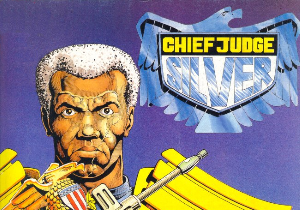

Chief Judge Thomas Silver (following McGruder's first term, preceding McGruder's second term) proved to have flawed judgement, as his acceptance of Kraken as a replacement for Dredd allowed the Sisters of Death to enact their Necropolis plan.
Art by Cliff Robinson
| Story Title | Parts | Pages | w indicates a wraparound coverCovers | Year(s) | Issues | Writer | Artist | Colourist | Letterer |
|---|---|---|---|---|---|---|---|---|---|
From Judge DreddA Chief Judge Resigns | 1 | 6 | 0 | 1986 | 457 | Alan Grant John Wagnervarious | Cliff Robinson | <-- 2pp, [b&w] | Tom Frame |
From Anderson Psi Division[Hour of the Wolf] | 12 | 62 | 521: Barry Kitson 529: Barry Kitson 2 | 1987 | 520-531 | Alan Grant John Wagnervarious | Barry Kitson: 1‑10 Anderson: 6‑7 Will Simpson: 11‑12 Bruno: 11‑12 various | [b&w] | Steve Potter: 1‑6 Tom Frame: 7‑8, 10, 12 John Aldrich: 9, 11 various |
From Anderson Psi DivisionBeyond the Void | 2 | 10 | 613: Steve Yeowell 1 | 1989 | 612-613 | Alan Grant | Mick Austin | [b&w] | Tom Frame |
From Anderson Psi DivisionTriad | 10 | 50 | 643: Mick Austin 1 | 1989 | 635-644 | Alan Grant | Arthur Ranson | [b&w] | Steve Potter |
From Judge DreddTale of the Dead Man | 7 | 54 | 662: Steve Cook 668: Jeff Anderson 2 | 1990 | 662-668 | John Wagner | Will Simpson: 1‑4 Jeff Anderson: 5‑7 various | <-- | Tom Frame |
From Judge Dredd | Countdown to NecropolisBy Lethal Injection | 2 | 13 | 669: Carlos Ezquerra 1 | 1990 | 669-670 | John Wagner | Carlos Ezquerra | <-- | Tom Frame |
From Judge Dredd | Countdown to NecropolisRights of Succession | 1 | 7 | 0 | 1990 | Reprints: M3.20671 | John Wagner | Carlos Ezquerra | <-- | Tom Frame |
From Judge DreddNecropolis | 26 | 174 | 674: Carlos Ezquerra 685: Carlos Ezquerra 690: David Hine 691: Mick Austin 693: Mike Hadley 696: Steve Yeowell 699: Dermot Power 7 | 1990 | Reprints: M3.21‑M3.35674-699 | John Wagner | Carlos Ezquerra | <-- | Tom Frame |
From Anderson Psi Division A pre‑Necropolis story.Shamballa | 12 | 61 | 703: Arthur Ranson 708: Arthur Ranson 2 | 1990 | 700-711 | Alan Grant | Arthur Ranson | <-- | Steve Potter |
From Judge DreddTheatre of Death | 2 | 12 | 0 | 1990 | Reprints: X1700-701 | John Wagner | Ron Smith | <-- | Tom Frame |
From Judge DreddReturn of the King | 3 | 18 | 0 | 1991 | 733-735 | Garth Ennis | Carlos Ezquerra | <-- | Tom Frame |
| Posters | |||||||||
Star Scan.Chief Judge Silver | 1 | 1 | 0 | 1988 | Reprints: JDMS2601 | n/a | Cliff Robinson | <-- | n/a |
| year | episodes | pages |
| 1978 | 0 | 0 |
| 1979 | 0 | 0 |
| 1980 | 0 | 0 |
| 1981 | 0 | 0 |
| 1982 | 0 | 0 |
| 1983 | 0 | 0 |
| 1984 | 0 | 0 |
| 1985 | 0 | 0 |
| 1986 | 1 | 6 |
| 1987 | 12 | 62 |
| 1988 | 0 | 0 |
| 1989 | 12 | 60 |
| 1990 | 50 | 321 |
| 1991 | 3 | 18 |
| 1992 | 0 | 0 |
| 1993 | 0 | 0 |
| 1994 | 0 | 0 |
| 1995 | 0 | 0 |
| 1996 | 0 | 0 |
| 1997 | 0 | 0 |
| 1998 | 0 | 0 |
| 1999 | 0 | 0 |
Comic strip data (excludes other content):